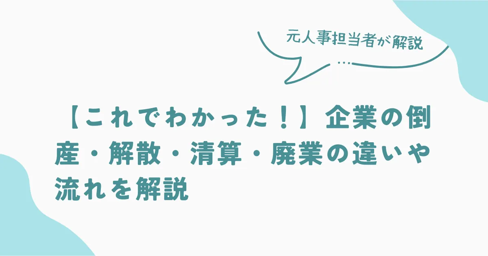
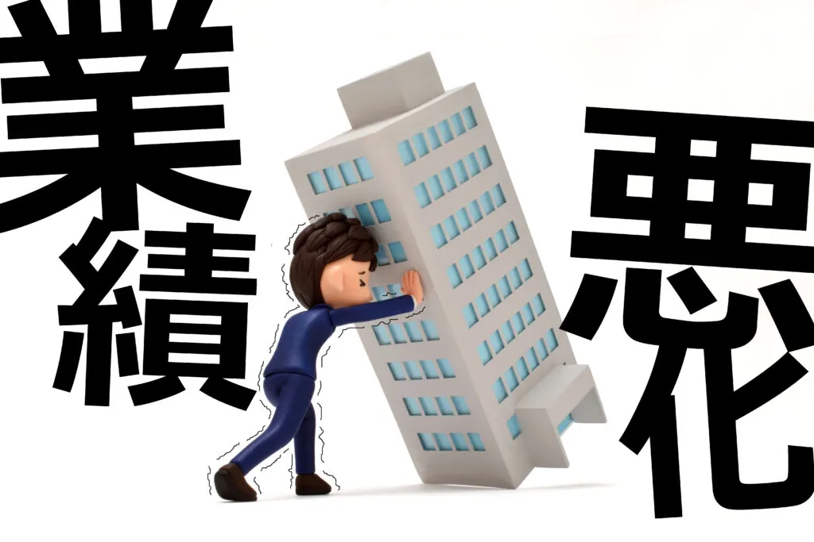
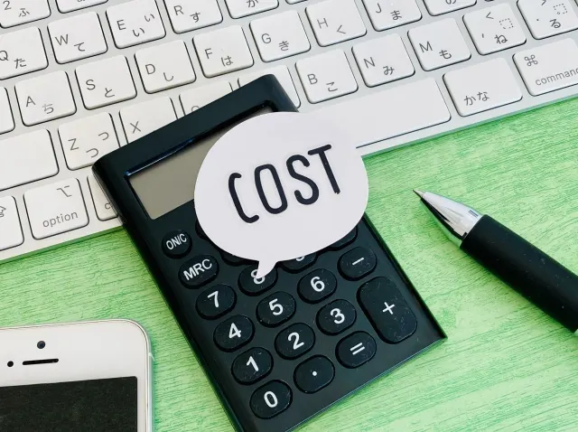

【これでわかった！】企業の倒産・解散・清算・廃業の違いや流れを解説


企業が事業を活動停止することを意味する「倒産」や「解散」「清算」といった言葉を耳にする方もいるのではないでしょうか。
これらは混同されがちですが、意味合いや背景が異なります。
これらの違いを理解しておくことは、企業の現状や将来を考える上で欠かせません。
この記事でわかること
- 事業停止の種類
- 企業の倒産や廃業にかかる費用
- 会社の解散から廃業までの手続きの流れ
企業の「倒産」と「廃業」について、それぞれの定義や原因、手続きの流れ、関連する費用といった観点から、その違いを分かりやすく解説していきます。
事業停止には倒産や解散・清算などの種類がある
企業が営業活動を停止する方法には、いくつかの種類があります。
よく耳にする言葉として「倒産」がありますが、法的な手続きとしては「解散」や「清算」といった方法をとるのが一般的です。
具体的には、以下のような種類があります。
- 廃業
- 解散
- 清算
- 倒産
それぞれの言葉の意味を理解しておきましょう。
廃業
廃業とは、経営者が自らの意思で会社の経営をやめることを指します。
主な理由としては、資金繰りの悪化により取引先や従業員への支払いが困難になり、経営継続が不可能になるケースが一般的です。
しかし、業績悪化だけが原因ではなく、債務超過に陥る前や、後継者不足、経営者の高齢化によるリタイアといった理由で廃業を選択する場合もあります。
個人事業主の場合は廃業届を提出すれば事業を停止できますが、法人の場合は廃業に伴い、会社の資産や負債を全て整理しなければなりません。
一般的に、廃業は倒産とは異なり、会社に残された債務を完済できる状態で行われる自主的な事業停止と認識されています。
解散
会社の解散とは、事業活動を完全に停止し、会社を法的に消滅させるための清算手続きに入る最初の段階を指します。
個人事業主が廃業届を提出するのとは異なり、法人の場合は法人格を消滅させるためには、法律で定められた手順を踏まなければなりません。
 まつお
まつお単に事業を停止しただけでは会社は存在し続けるため、解散の手続きが不可欠です。
解散の事由は会社法で定められており、以下のいずれかの要件を満たす必要があります。
- 定款で定めた存続期間の満了
- 定款で定めた解散事由の発生
- 株主総会の決議
- 合併により会社が消滅する場合
- 破産手続開始の決定
- 裁判所による解散命令
- 休眠会社のみなし解散の制度
これらの条件を満たして解散しても、その後に続く清算手続きが完了するまでは法人格は消滅しない点に注意が必要です。
清算
清算とは、解散した会社の法人格を最終的に消滅させるために、残された資産や負債を整理する一連の手続きのことです。
会社が解散して事業活動を停止しても、通常、会社名義の資産（不動産、預金、売掛金など）や負債（買掛金、借入金など）は残存しています。
そのため、法人格を完全に消滅させるには、これらの財産関係を整理する清算手続きが必須です。
具体的には、会社の資産を現金化し債権の回収を行い、それらを用いて債務の弁済にあてます。
まつお全ての債務を弁済しても財産が残る場合、株主に対して出資割合に応じて分配されます。
この清算手続きは、通常、清算人によって進められますが、代表取締役や取締役がそのまま清算人に就任することが一般的です。
ただし、弁護士などの専門家を清算人に選任しても構いません。
なお、一般によく聞かれる「破産」も、法律上はこの清算手続きの一種と位置づけられています。
倒産
倒産は法律上の正式な用語ではありませんが、一般的には、会社の経営が行き詰まり、支払うべき債務の返済が困難になった状態を指す言葉として使われます。
主な原因は、資金繰りの悪化による債務不履行であり、経営者の意思とは関係なく、事業継続が不可能となり廃止せざるを得ない状況になることです。
まつお倒産は大きく分けて「法的整理」と「私的整理」の二つに分類されます。
法的整理は、裁判所の監督下で行われる法的手続きであり「破産手続」や「民事再生手続」「会社更生手続」「特別清算手続」などです。
法的整理は、裁判所が関与するため手続きの公平性が保たれやすいという利点があります。
一方、私的整理（任意整理）は、裁判所を介さず、債権者と債務者の間の自主的な協議によって整理を進める方法です。
私的整理は、法的整理に比べて社会的な負のイメージを軽減できます。
h2:企業の倒産や廃業にかかる費用

企業の倒産や廃業には、様々な種類の費用が発生します。これらの費用を把握しておくことは、事業の撤退を検討する上で非常に重要です。
具体的には、以下のような費用が発生します。
- 設備や在庫の処分費用
- 諸手続き費用
- 原状回復費用
これらの費用は、会社の規模や状況によって大きく変動しますが、事前に把握しておくことで、スムーズな手続きを進めるための準備ができます。
以下では、それぞれの費用について詳しく見ていきましょう。
設備や在庫の処分費用
廃業時には、抱えている在庫を処分する必要があり、これには費用がかかります。
在庫は資産として計上されるため、抱えている量が多いほど確定申告時の税負担が大きくなるでしょう。
まつお多くの場合、仕入れ価格よりも安く販売して処分します。
自社だけで処分しきれない場合は専門業者への依頼が必要となり、手数料が発生するので注意が必要です。
同様に、事業で使用していた機械や設備も、売却できなければ専門業者に処分を依頼しなければなりません。
特に老朽化した設備や特殊な設備の場合、処分費用が高額になる傾向があり、事業規模によっては数百万から1,000万円以上かかるケースもあります。
諸手続き費用
会社の廃業や解散に伴い、法務局での登記手続きや官報への公告掲載など、様々な法的手続きが必要となり、これらに伴う費用が発生します。
| 項目 | 金額 |
|---|---|
| 解散登記の登録免許税 | 30,000円 |
| 司法書士費用（解散登記） | 50,000 ～ 100,000円 |
| 清算人登記の登録免許税 | 9,000円 |
| 司法書士費用（清算人登記） | 50,000 ～ 100,000円 |
| 官報公告費用 | 30,000 ～ 50,000円 |
| 債権者通知費用 | 10,000 ～ 50,000円 |
| 税理士報酬（確定申告） | 100,000 ～ 300,000円 |
| 清算結了登記の登録免許税 | 2,000円 |
| 司法書士費用（清算結了登記） | 50,000 ～ 100,000円 |
費用が確定しているのは登録免許税のみで、専門家報酬などは依頼先によって異なりますが、諸手続き費用の総額は一般的に30万円から100万円程度が必要です。
原状回復費用
賃貸物件を借りて事業を運営していた場合、廃業時にはその物件を借りる前の状態に戻すための原状回復費用が必要です。
物件の広さや状態、賃貸借契約の内容によって異なりますが、一般的には1坪あたり数万円から10万円程度が目安とされています。
まつお物件の面積が広ければ広いほど費用は高額になるでしょう。
また、間取りを変更したり特殊な設備を設置したりしていた場合は、通常のクリーニングや修繕に加えて、それらを撤去・復旧するための追加費用が発生することもあります。
原状回復にかかる費用は高額になるケースもあるため、事前に賃貸借契約書を確認し、専門業者に見積もりを依頼しておきましょう。
会社の解散から廃業までの手続きの流れ
会社を廃業するためには、法的な手続きを段階的に進める必要があります。これらの手続きは複雑であり、正確な知識が必要です。
主な流れとしては、以下のようになります。
- 株主総会での解散決議
- 清算人の選任
- 解散および清算人選任の登記
- 各機関へ解散を届け出る
- 決算書類の作成
- 債権者保護手続きをする
- 官報による解散公告の通知
- 解散確定申告を行う
- 資産と負債の清算をする
- 清算確定申告を行う
- 決算報告書の作成と承認をする
- 清算結了の登記をする
これらのステップを、順に見ていきましょう。
1.株主総会での解散決議
会社を廃業するための最初のステップは、株主総会で会社の解散を決議することです。
会社の解散は経営に重大な影響を与えるため、株主総会の中でも特に重要な決議とされる「特別決議」が必要となります。
特別決議が成立するためには、原則として、議決権を持つ株主の過半数が出席し、さらに出席した株主の議決権の3分の2以上の賛成が必要です。
この決議によって、会社は正式に解散し、清算手続きへと進むことになります。
オーナー企業など、株主が限られている場合は、実質的に経営者の判断で解散を決定できるケースも少なくありません。
2.清算人の選任
株主総会で会社の解散が決議されると、次に解散後の清算手続きを担当する「清算人」の選任が必要です。
清算人は、会社に残っている業務の完了、債権の回収、資産の現金化、債務の弁済、そして最終的に残った財産（残余財産）を株主に分配する役割を担います。
会社が解散すると取締役はその地位を失うため、清算人がこれらの業務を引き継ぐことになるのです。
まつおなお、清算人の選任は解散決議と同じ株主総会で行われます。
選任方法は、定款の定めや株主総会での決議、あるいは自動的に取締役が清算人になる（法定清算人）といった方法が一般的です。
3.解散および清算人選任の登記
株主総会で会社の解散と清算人の選任が決議されたら、2週間以内に、法務局へ「解散の登記」と「清算人選任の登記」を申請しなければなりません。
この登記手続きは、会社の本店所在地を管轄する法務局で行います。
申請には、登記申請書に加えて、解散と清算人選任を議決した株主総会の議事録、定款、清算人の就任承諾書（選任方法による）、株主リストなどが必要です。
なお、登記申請には登録免許税が必要で、解散登記に3万円、清算人選任登記に9,000円の合計3万9,000円がかかります。
4.各機関へ解散を届け出る
法務局での解散登記が完了したら、関係各機関へ会社が解散した旨を届け出る必要があります。
主な届け先と必要書類は、以下の通りです。
| 届出先 | 書類 |
|---|---|
| 税務署 | ・異動届出書 ・事業廃止届出書 ・給与支払事務所等の開設・移転・廃止届出 |
| 県税事務所 | 解散に関する届出書（東京都は異動届出書） |
| 市役所 | 異動届出書 |
| 年金事務所 | 健康保険・厚生年金保険適用事業所全喪届（解散登記から5日以内） |
| ハローワーク | ・雇用保険適用事業所廃止届 ・雇用保険被保険者資格喪失届 ・雇用保険被保険者離職証明書 （全て事業を廃止した日や退職日から10日以 |
| 労働基準監督署 | ・労働保険確定保険料申告書 ・労働保険料・一般拠出金還付請求書 （全て事業を廃止した日から50日以内） |
なお、届出が必要な機関は、税務署や都道府県の県税事務所などです。
廃業に伴い従業員を解雇する場合には、年金事務所や労働基準監督署にも届出が必要となります。
5.決算書類の作成
会社が解散したら、清算人は遅滞なく会社の財産状況を調査し、「財産目録」と「貸借対照表」を作成しなければなりません。
財産目録は、解散時点での会社の全ての資産と負債を具体的にリストアップしたものです。
貸借対照表は資産、負債、純資産の状態を示す財務諸表のひとつで、会社の財産状況を正確に把握し、その後の清算手続きを進めるための基礎となります。
まつお作成された財産目録と貸借対照表は、株主総会に提出し承認を得なければなりません。
承認された書類は、会社法に基づき、作成時から10年間保管する必要があります。
6.債権者保護手続きをする
会社の解散は、会社にお金を貸している債権者に影響を与える可能性があるため、債権者を保護するための手続きを行います。
清算人は、会社が解散したことを、会社が把握している個々の債権者に対して個別に通知しなければなりません。
まつおこの通知により、債権者は会社の解散の事実を知り債権を回収する機会を得られます。
この手続きは、この債権者保護手続きを適切に行うことは、後々のトラブルを防ぐ上で欠かせません。
7.官報による解散公告の通知
債権者保護手続きの一環として、清算人は官報に会社の解散公告を掲載する必要があります。
官報は国が発行する機関紙であり、公告を掲載することで広く一般に解散の事実を知らせることが可能です。
この公告には、債権者に対して一定期間内（最低2ヶ月以上）に債権を申し出るよう促す内容が含まれます。
期間内に債権の申し出がなかった場合、その債権は原則として清算手続きから除外されることになるため、債権者にとっては重要な情報源となるのです。
8.解散確定申告を行う
会社が解散した場合、通常の事業年度とは別に、解散日までの期間についての確定申告を行う必要があります。
申告の対象となる期間は、その事業年度の開始日から解散日までです。
解散確定申告書は、株主総会で承認された決算書類（財産目録、貸借対照表など）に基づいて作成します。
まつお提出期限は、解散日の翌日から2ヶ月以内と定められているので速やかに行いましょう。
通常の確定申告とは異なる点もあるため、税理士などの専門家へ相談をおすすめします。
9.資産と負債の清算をする
債権者保護手続きや解散確定申告と並行して、清算人は清算業務を進めます。まずは、会社が持つ売掛金や貸付金などの債権の回収です。
同時に、土地や建物、機械、有価証券といった現金以外の資産を売却し、現金化します。
まつおこうして集めた資金を使って、買掛金や借入金などの会社の債務を弁済していくのです。
全ての債務を支払い終えても財産が残った場合、これを「残余財産」と呼び、株主に対してその持ち株比率に応じて分配されます。
もし資産を全て現金化しても債務を完済でず、債務超過の状態であれば、通常清算ではなく特別清算や破産手続といった別の法的手続きに移行しなければなりません。
10.清算確定申告を行う
全ての資産の現金化と債務の弁済が完了し、株主へ分配する残余財産の額が確定した時点で、「清算確定申告」を行う必要があります。
この申告は、解散後の清算期間における所得と、最終的な残余財産の額を税務署に報告する手続きです。
提出期限は、残余財産が確定した日の翌日から1ヶ月以内となっています。
ただし、残余財産の最後の分配がその1ヶ月以内に行われる場合は、分配実施日の前日が申告期限です。
また、残余財産の分配を受けた株主は、その分配額が出資額を超える場合、その超えた部分（みなし配当）について所得税の確定申告が必要になることがあります。
11.決算報告書の作成と承認をする
全ての清算事務が完了したら、清算人は遅滞なく「決算報告書」を作成しなければなりません。
一連の清算手続きの結果や具体的には収入、支出、残余財産の分配額などが詳細に記載されます。
まつお決算報告書は株主総会に提出し、承認が必要です。
この承認をもって、会社の清算手続きは完了し、法人格の消滅に向けた最終段階に入ります。
12.清算結了の登記をする
株主総会で決算報告書が承認されたら、承認日から2週間以内に、法務局へ「清算結了の登記」を申請します。
申請には登記申請書や決算報告書の承認に関する株主総会議事録、決算報告書が必要です。
まつお登記が完了すると、会社の登記簿は閉鎖され法的に会社が消滅します。
また、登記完了後、税務署や都道府県税事務所、市区町村役場など関係各機関へ、清算が結了した旨の届出（異動届出書）を提出しなければなりません。
なお、清算結了登記は、官報公告で定めた債権申し出期間（最低2ヶ月）が経過した後でなければ申請できないので注意が必要です。
廃業の判断は慎重に
会社の廃業は、経営者や従業員、取引先など多くの関係者に影響を与えるため、極めて慎重な判断が求められます。
廃業は会社を完全に消滅させる最終的な手続きであり、一度実行すると元に戻すことは基本的にできません。
また、解散・清算といった複雑な手続きには時間と費用がかかり、これまで培ってきた技術や信用などの経営資源も失われてしまいます。
したがって、廃業を考える前に、まずは自社の損益や資金繰りの状況を正確に把握し、経営改善の可能性を探ることが重要です。
事業の将来性や負債の状況を冷静に見極めましょう。
すぐに廃業を決断せず、事業の一時停止である「休業」や、M&Aを含む「事業承継」といった他の選択肢も検討すべきです。
廃業は最後の手段と位置づけ、あらゆる可能性を検討した上で最終的な判断を下しましょう。判断に迷う際や手続きに不安がある場合は、専門家への早期相談がおすすめです。
採用・人事やAI活用のご相談を受け付けています
AI研修、AI導入支援、採用支援、記事の執筆など、まずはお気軽にご相談ください。
ご相談はこちら